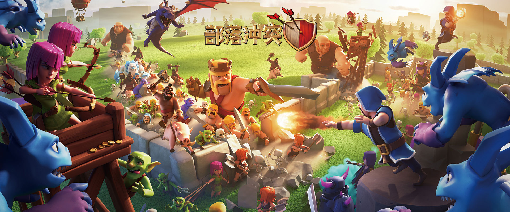
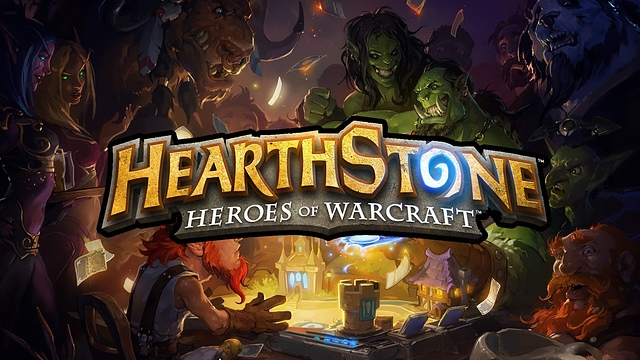

《NO.1 不思議迷宮》

《不思議迷宮》是一款探險手遊。遊戲呈現的是一個神奇的世界，無論是瀑布奔流的高山、幽暗密林，危機四伏的險峻火山、聳入雲霄的無盡高塔，到處都隱藏著稀奇古怪的寶物卻同樣危機四伏。
《NO.3 陰陽師：百聞牌》

陰陽師：百聞牌是一款和風的無套路妖怪卡牌對戰手遊。逾百位頂級畫師，以匠心繪制的精美卡牌，完美演繹陰陽師中的經典角色。公平的對戰、精致的和風，讓你享受非同一般的遊戲體驗。
《NO.5部落沖突》
部落沖突由知名的遊戲軟件開發公司Supercell公司打造的一款手機策略遊戲，這款遊戲在策略塔防遊戲中，實屬精良，需要玩家成立一支強大的軍隊展開一場史無前例的部落戰爭。
《NO.7爐石傳說》
在爐石傳說手機版這款節奏明快的卡牌遊戲中，您將成為一位英雄，運用你的機智，通過巧妙的策略打出各種威力強大的卡牌，施放法術、召喚隨從來奪取這變幻莫測的戰局的主動權。
《NO.9 明日方舟》

明日方舟是一款以魔物為主題，擁有超高人氣的二次元策略塔防手遊。遊戲帶你來到末日廢土世界，你將管理一艘滿載“ 魔物幹員”的方舟，為調查神秘礦石災難而踏上冒險的旅途。
《NO.2 少女前線》

少女前線是一款後啟示錄題材的軍武策略養成類遊戲。世界的秩序和穩定由一家私人軍事承包商來維護；您需要扮演承包商旗下的一名指揮官，指揮戰術少女來達成公司維護世界穩定的任務。
《NO.4 皇室戰爭》

部落沖突皇室戰爭是以《部落沖突》中的角色和世界觀為原型，使遊戲的玩法更著重於推塔對戰。玩家可以通過卡牌召喚怪物和法術，雙方交戰直到一方推倒另一方，使主城堡被毀便可獲得勝利。
《NO.6 輻射 避難所》

《輻射：避難所》（fallout shelter）作為一款與輻射有關的模擬養成類手機遊戲，玩家需要建一所屬於自己的避難所，使用避難所中的各種設施來獲取資源，速速加入遊戲中開始你的避難生涯~
《NO.8 月圓之夜》

《月圓之夜》是一款獨立單機卡牌遊戲，沒有強制性的新手引導，不用刷圖，沒有十連抽。劇情將在卡牌戰鬥中演繹，每個NPC、BOSS都被賦予了使命與性情，不同的選擇，將帶來不同的結局。
《NO.10 天地劫》

天地劫：幽城再臨是一款好玩的戰棋類角色扮演手遊，該遊戲中是有著很強的中國風，能給玩家帶來濃濃的中國元素。全新創作的故事新篇章，不斷的進行創新和升級，有著不一樣的武俠世界。